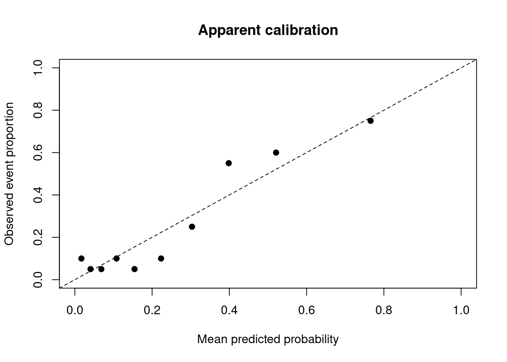

library(survival)
library(lattice)
library(Formula)
library(ggplot2)
library(Hmisc)
library(rms)
library(gridExtra)
library(reshape2)
library(MASS)
library(mgcv)
library(glmnet)
library(pROC)
Model Validation
Computer Practical Solutions
NoteHow to use this solution
The corresponding prompts are in the Model Validation computer practical. The map below identifies where each task is answered.
- Task: the prompt in the linked computer practical.
- Solution: the validation code and output on this page.
- Discussion answer: the interpretation beneath each validation method.
Task and solution map
| Task in the computer practical | Worked solution and discussion answer |
|---|---|
| Explain apparent validation | Apparent Validation |
| Apply bootstrap validation | Bootstrap Validation |
| Apply split-sample validation | Split-sample Validation |
| Apply cross-validation | Cross-validation as a general family and Manual 5-fold Cross-validation |
| Distinguish internal and external validation | Internal vs. External Validation |
Model Validation
Model validation is the process of evaluating how well a predictive model performs when applied to new, unseen data. It helps assess the reliability, robustness, and generalizability of the model’s predictions beyond the training dataset.
There are two main types of validation:
- Apparent validation: Evaluates model performance on the same data used to fit the model. It often overestimates performance.
- Internal validation: Uses resampling techniques (e.g., cross-validation, bootstrap) to estimate performance while correcting for optimism.
- External validation: Tests the model on an independent dataset to assess transportability.
Key sections
This part 1.3 Model Validation will consist of some sections :
- Learn about Apparent Validation vs Internal Validation
- Learn about Internal Validation via Bootstrap
- Learn about Validation by using split-sample, cross-validation, and Bootstrap validation
- Learn about internal vs external validation
Keywords for table summary :
| Fields | Definition |
|---|---|
| Dxy | How well your model separates good cases from bad cases. Higher is better. |
| R² | How much of the variation in your outcome your model explains. |
| Intercept | Should be close to 0. |
| Slope | How spread out your predictions are compared to reality. Should be close to 1. |
| Emax | The biggest calibration error the model makes. |
Summary of validation methods
The schema below highlights the key distinction: apparent validation reuses the development data for testing, resampling methods create held-out observations from the development data, and external validation uses a genuinely independent cohort. K-fold cross-validation is one specific form of cross-validation, rather than a completely separate validation family.
Development dataset
Apparent validationTrain: all observationsTest: same observations
Usually optimistic
Internal validation
BootstrapTrain: bootstrap sampleTest: out-of-bag observations
Optimism-corrected internal performance
Split-sample ValidationTrain: 70% of observationsTest: 30% of observations
Held-out test performance
Cross-validation (general)Train: training subset for each repeatTest: corresponding held-out subset
Average held-out performance
External validationTrain: development cohortTest: independent cohort
Transportability to a new setting
| Method | Trains on | Tests on | Generalization Level | Best For |
|---|---|---|---|---|
| Bootstrap | Resampled dataset | Out-of-bag data | Internal (with optimism correction) | Estimating optimism without setting aside a fixed test set |
| Split-sample Validation | e.g. 70% of observations | e.g. 30% of observations | Internal (single random hold-out) | A simple, quick internal check when the dataset is large enough to tolerate withholding data |
| Cross-validation (family) | Varies (e.g. LOOCV, repeated CV) | Left-out part | Internal | Internal performance estimation and, when needed, hyperparameter tuning |
| K-Fold CV (specific design) | K − 1 folds | 1 held-out fold | Internal | A common, transparent CV design across many sample sizes |
| External Validation | Original data | Completely new data | External (real-world test) | Final model evaluation and transportability |
The split-sample method is internal validation because both training and testing use the development dataset. It does not provide external validation, and it does not automatically correct optimism. Its test estimate can be unstable because it depends on one random split.
Cross-validation is the general family: each fitted model is tested on observations that were not used for that fit. The exact train/test arrangement depends on the named design. K-fold cross-validation is one specific member of this family, using K - 1 folds for training and 1 held-out fold for testing, repeated until every fold has been used for testing. Therefore, K-fold CV should not be presented as an alternative to cross-validation; it is an example of cross-validation.
The practical implication is that apparent validation is useful for describing the fitted model, bootstrap and cross-validation estimate internal generalizability, and external validation provides the strongest test of transportability.
Load the library
Load datasets and saved model
df <- readRDS(file.path("data" ,"dataset.rds"))
model4 = readRDS(file.path("model", "model4.rds"))1) Apparent Validation
Apparent validation in lrm refers to evaluating model performance on the same data used to fit the model.
print(model4)Logistic Regression Model
lrm(formula = y ~ x1 + x2 + x3 + x4 + x5, data = df, x = TRUE,
y = TRUE)
Model Likelihood Discrimination Rank Discrim.
Ratio Test Indexes Indexes
Obs 200 LR chi2 57.80 R2 0.368 C 0.831
0 148 d.f. 7 R2(7,200)0.224 Dxy 0.662
1 52 Pr(> chi2) <0.0001 R2(7,115.4)0.356 gamma 0.662
max |deriv| 8e-09 Brier 0.136 tau-a 0.256
Coef S.E. Wald Z Pr(>|Z|)
Intercept -1.4740 0.5031 -2.93 0.0034
x1 1.5514 0.3056 5.08 <0.0001
x2 0.1240 0.2446 0.51 0.6121
x3=1 0.3845 0.4445 0.86 0.3870
x4=1 -0.5616 0.4164 -1.35 0.1774
x5=2 0.1054 0.5659 0.19 0.8522
x5=3 -0.2656 0.5883 -0.45 0.6517
x5=4 0.2856 0.6742 0.42 0.6718 predicted <- predict(model4, newdata = df, type = "fitted")
predicted <- pmin(pmax(predicted, 1e-6), 1 - 1e-6)
observed <- as.numeric(as.character(df$y))
calibration_model <- glm(
y ~ qlogis(predicted),
data = df,
family = binomial
)
apparent_metrics <- data.frame(
AUC = as.numeric(pROC::auc(pROC::roc(df$y, predicted, quiet = TRUE))),
Brier_score = mean((observed - predicted)^2),
Calibration_intercept = coef(calibration_model)[1],
Calibration_slope = coef(calibration_model)[2],
Pseudo_R2 = unname(model4$stats["R2"])
)
apparent_metrics AUC Brier_score Calibration_intercept Calibration_slope
(Intercept) 0.8310811 0.1356769 -7.700207e-11 1
Pseudo_R2
(Intercept) 0.3679288calibration_data <- data.frame(observed, predicted)
calibration_data$bin <- cut(
rank(calibration_data$predicted, ties.method = "first"),
breaks = seq(0, nrow(calibration_data), length.out = 11),
labels = FALSE,
include.lowest = TRUE
)
calibration_summary <- aggregate(
cbind(observed, predicted) ~ bin,
data = calibration_data,
FUN = mean
)
plot(
calibration_summary$predicted,
calibration_summary$observed,
xlim = c(0, 1),
ylim = c(0, 1),
xlab = "Mean predicted probability",
ylab = "Observed event proportion",
pch = 19,
main = "Apparent calibration"
)
abline(0, 1, lty = 2)
The metrics and calibration plot above are apparent, in-sample estimates. Because the model is evaluated on the same observations used for fitting, these estimates are expected to be optimistic and should be compared with the bootstrap results below.
Apparent validation evaluates model performance using the same data it was trained on. This might seem convenient, but it’s overly optimistic and misleading for several reasons:
- The model may learn patterns that are specific to the training data (noise), and these won’t generalize. Apparent validation can’t detect this.
- Accuracy, AUC, and R² often appear much higher than they really are — because the model is tested on data it has already “seen.”
- Relying on apparent validation may lead to deploying models that fail when exposed to new data.
TipQuestions for discussion and answers
Question 1. Which metrics are reported in apparent validation?
Answer. This section reports AUC, Brier score, calibration intercept, calibration slope, and pseudo-R², together with an apparent calibration plot.
Question 2. Why are apparent estimates optimistic?
Answer. The model is evaluated on the same observations used to estimate its coefficients, so it benefits from patterns and random noise already seen during fitting.
Question 3. How does overfitting affect apparent validation?
Answer. Overfitting generally makes apparent discrimination and pseudo-R² too high and can make calibration look better than it will be in new patients.
Question 4. Can a model be trusted only because it performs well on the training data?
Answer. No. Good training-data performance is necessary but not sufficient evidence of generalizability; internal or external validation is needed.
Question 5. When is apparent validation acceptable?
Answer. It is useful for describing the fitted model and teaching diagnostics, but it should not be the primary evidence for deployment or clinical performance claims.
2) Bootstrap Validation
Bootstrap validation involves repeatedly sampling with replacement from the original dataset, fitting the model on each sample, and evaluating it on the “left-out” data.
How it works:
- Create “bootstrap samples” (e.g., 200 samples of the same size as the original dataset).
- Fit the model on each bootstrap sample.
- Evaluate the model on the data not included in that sample (called “out-of-bag”).
- Measure the optimism in performance (e.g., AUC, R²), and subtract it from the original score.
validate(model4, "boot",50)cal <- calibrate(model4, B = 200)
plot(cal, xlab = "Predicted Probability", ylab = "Observed Probability")- AUC (approx from Dxy/2) ≈ 0.613 + 0.5 = 0.8065, R² = 0.305 → slight optimism corrected.
- Calibration slope drops to 0.869 → indicates some overfitting.
- Intercept shifts to -0.109 → tendency to overpredict risk.
- Emax = 0.051 → modest miscalibration at some points.
TipQuestions for discussion and answers
Question 1. What does bootstrap validation correct?
Answer. It estimates optimism caused by fitting and evaluating the model in the same sample, then adjusts performance estimates toward what is expected in new but similar samples.
Question 2. What is optimism, and how is it estimated?
Answer. Optimism is the difference between performance on a bootstrap sample and performance when that bootstrap-fitted model is applied to the original data. Repeating this process estimates the average optimism.
Question 3. Why can bootstrap validation be preferable to a single split in a small dataset?
Answer. Bootstrap uses repeated resamples and retains information from the full dataset, whereas a single split discards part of the data for fitting and can produce an unstable result.
Question 4. How should the calibration slope and intercept be interpreted?
Answer. A slope near 1 indicates appropriate spread of predictions and a slope below 1 suggests overfitting. An intercept near 0 indicates good overall calibration; the negative intercept here is consistent with some overprediction of risk.
3) Split-sample Validation
Randomly split the dataset into training and testing subsets. In this practical, we use 70% of the data for training and 30% for testing.
set.seed(2025)
train_size <- 0.7
train_id <- sample(seq_len(nrow(df)), size = floor(train_size * nrow(df)))
df_train <- df[train_id, ]
df_test <- df[-train_id, ]train_model <- lrm(y ~ x1 + x2 + x3 + x4 + x5,
data = df_train, x = TRUE, y = TRUE)Do prediction on new data.
pred_probs <- predict(train_model, newdata = df_test, type = "fitted")
auc(roc(df_test$y, pred_probs))Area under the curve: 0.7081- AUC = 0.8326, close to apparent → may be unstable due to small sample size. The model correctly ranks pairs of cases 83.26% of the time.
TipQuestions for discussion and answers
Question 1. What are the risks of split-sample validation with a small dataset?
Answer. The training model has fewer observations and the test estimate is based on only a subset, so both the fitted coefficients and the AUC can vary considerably with the random split.
Question 2. How should test performance be compared with training performance?
Answer. Test performance should generally be lower or less precise than apparent training performance. A similar value in one split is not proof of generalizability because the split may be favorable and the estimate is noisy.
4) Cross-validation as a general family
Cross-validation is a family of internal validation methods. The common principle is to repeatedly fit the model on a training subset and evaluate it on a corresponding held-out subset. The exact scheme must be named: the code below uses method = "crossvalidation" and B = 5, so in this practical it represents one 5-fold cross-validation run. Here, “folds” is the usual term; these are not clusters used in cluster analysis.
This is different from the default call to validate(): validate() defaults to method = "boot", which performs bootstrap validation. For method = "crossvalidation", B = 5 means that the development sample is divided into 5 groups; it does not mean five separate repetitions of 5-fold cross-validation.
How the 5-fold example works:
- Divide the data into 5 subsets.
- In each round, use 4 folds for training and 1 fold for validation.
- Rotate so each fold is used as validation once.
- Average the results across the 5 held-out folds.
set.seed(2025)
validate(model4, "crossvalidation", B = 5)- Corrected Dxy is approximately 0.595, corresponding to an AUC of approximately 0.798.
- Corrected pseudo-R² is approximately 0.297; it should not be interpreted as 29.7% of the outcome variance explained.
- Corrected calibration slope is approximately 0.941, the intercept is approximately −0.079, and Emax is approximately 0.152.
TipQuestions for discussion and answers
Question 1. Why is cross-validation more reliable than apparent validation?
Answer. Each observation is evaluated in a held-out fold that was not used to fit its prediction, so the estimate is less optimistic than an in-sample estimate. In this example, that means 5-fold cross-validation.
Question 2. What happens if there are too few or too many folds?
Answer. Too few folds can make the training sets substantially smaller and increase bias; too many folds make the estimates more correlated and can increase computational cost and variance. The choice should reflect sample size and the modelling goal.
5) Manual 5-fold Cross-validation
This section implements the same cross-validation principle manually. It uses 5-fold cross-validation, which is a specific design within the broader cross-validation family described above.
The difference from the rms::validate example is therefore implementation: validate() provides a packaged resampling summary for an rms model, whereas this loop exposes each train/test split and lets us calculate accuracy, kappa, and AUC ourselves.
Example (5-fold CV):
- Data is split into 5 parts (folds).
- Train on 4 folds, validate on 1 fold.
- Repeat this process 5 times so each fold is used once for validation.
set.seed(2025)
k <- 5
fold_id <- sample(rep(seq_len(k), length.out = nrow(df)))
cv_results <- lapply(seq_len(k), function(i) {
train_data <- df[fold_id != i, ]
test_data <- df[fold_id == i, ]
fit <- glm(y ~ x1 + x2 + x3 + x4 + x5,
data = train_data,
family = binomial)
prob <- predict(fit, newdata = test_data, type = "response")
pred <- factor(ifelse(prob >= 0.5, 1, 0), levels = levels(test_data$y))
tab <- table(test_data$y, pred)
observed_agreement <- sum(diag(tab)) / sum(tab)
expected_agreement <- sum(rowSums(tab) * colSums(tab)) / sum(tab)^2
data.frame(
accuracy = observed_agreement,
kappa = (observed_agreement - expected_agreement) /
(1 - expected_agreement),
auc = as.numeric(pROC::auc(pROC::roc(test_data$y, prob, quiet = TRUE)))
)
})
cv_results <- do.call(rbind, cv_results)
cv_results accuracy kappa auc
1 0.800 0.4346290 0.8119122
2 0.850 0.5471698 0.8275862
3 0.725 0.3714286 0.7653333
4 0.800 0.3750000 0.7304688
5 0.775 0.1743119 0.8744589colMeans(cv_results) accuracy kappa auc
0.7900000 0.3805079 0.8019519 - The cross-validation code reports mean accuracy, Cohen’s kappa, and AUC across the five folds. Interpret these estimates as internal validation results rather than evidence of external transportability.
NoteWhat is different from the general cross-validation example?
Both examples use the same 5-fold cross-validation principle: each model is trained on 4 folds and tested on the remaining fold. The difference is how the procedure is implemented and summarized.
validate(model4, "crossvalidation", B = 5)automatically refits thelrmmodel and returns model-specific indexes such as Dxy, pseudo-R², calibration slope, intercept, and Emax, including an optimism-corrected index.- This manual loop explicitly creates the five train/test splits, fits a
glmmodel in each loop, and calculates accuracy, Cohen’s kappa, and AUC. It is therefore easier to inspect and customize, but it requires more code and careful checks for data leakage and correct metric calculation.
The results are not expected to be identical here because the examples use different model-fitting functions and different metrics. A numerical comparison would require the same fold assignments, the same model-fitting function, and the same performance metrics in both implementations.
TipQuestions for discussion and answers
Question 1. What does K represent?
Answer. K is the number of folds. With K = 5, the model is trained on four-fifths of the data and evaluated on the remaining fifth, with every fold used once for testing.
Question 2. What happens if K is too small or too large?
Answer. A small K leaves less data for training and can increase bias; a very large K can increase variance and computational cost. The folds must also be large enough to contain both outcome classes.
Question 3. How does this improve the performance estimate?
Answer. It produces out-of-fold predictions for all observations and averages performance across several splits, reducing dependence on one arbitrary train/test partition. It still estimates internal, not external, validity.
6) Internal vs. External Validation
External validation tests the model on a completely independent dataset that was not used during model development. The example below is simulated transportability validation, not validation in an independent real-world cohort.
set.seed(123)
logit <- function(x){log(x/(1-x))}
expit <- function(x){exp(x)/(1+exp(x))}
# Simulate a dataset. This is simulated transportability validation,
# not validation in an independent real-world cohort.
n <- 300
x1 <- rnorm(n)
x2 <- rnorm(n)
x3 <- rbinom(n, 1, prob = 0.35)
x4 <- rbinom(n, 1, prob = 0.5)
x5 <- sample(1:4, size = n, replace = TRUE, prob = c(0.3, 0.3, 0.2, 0.2))
logit.py <- -2 + x1 + 0.2 * x1^2 + 0.3 * x2 + 0.1 * x2^2 +
0.2 * (x3 == 1) + 0.2 * (x4 == 1) + 0.2 * (x5 == 2) -
0.1 * (x5 == 3) + 0.2 * (x5 == 4) + rnorm(n, 0, 0.1)
py <- expit(logit.py)
y <- rbinom(n,1,py)
df_test_external <- data.frame(y = factor(y), x1, x2, x3 = factor(x3), x4 = factor(x4), x5 = factor(x5))pred_probs_external <- predict(model4, newdata = df_test_external, type = "fitted")
auc(roc(df_test_external$y, pred_probs_external))Area under the curve: 0.76840.7969 means the model correctly ranks pairs of cases 79.69% of the time.
TipQuestions for discussion and answers
Question 1. Why is external validation considered the strongest test of transportability?
Answer. It evaluates the locked model in an independent patient population that was not used for model development, so it tests performance under a genuinely new case mix and care setting.
Question 2. What would a drop in external performance suggest?
Answer. It could indicate differences in case mix, predictor measurement, outcome prevalence, clinical practice, or model overfitting. Calibration should be inspected as well as AUC.
Question 3. Which validation approach is most appropriate for this dataset of about 200 observations?
Answer. Bootstrap validation and repeated or stratified cross-validation are preferable for internal validation because they use the available sample efficiently. The simulated external example is useful for teaching transportability, but it is not a substitute for validation in a real independent cohort.
Summary of validation results
The methods are shown in the requested order. The rows retain the original performance results; a dash means that the metric was not reported for that method in this practical.
| Metric/result | Apparent Validation | Bootstrap (internal) | Split-sample | 5-fold CV (general) | 5-fold CV (manual) | External validation |
|---|---|---|---|---|---|---|
| AUC / C-index | 0.831 | Corrected AUC ≈ 0.807 | 0.8326 | Corrected AUC ≈ 0.798 | Mean AUC 0.802 | 0.7969 |
| R² | 0.368 | Corrected 0.305 | — | Corrected 0.297 | — | — |
| Calibration slope | 1.000 | 0.869 | — | 0.941 | — | — |
| Intercept | 0.000 | −0.109 | — | −0.079 | — | — |
| Emax | 0.000 | 0.051 | — | 0.152 | — | — |
| Accuracy | — | — | — | — | Mean 0.790 | — |
| Kappa | — | — | — | — | Mean 0.381 | — |
The model shows strong apparent performance, but internal validation indicates optimism and possible calibration problems. These results are useful for learning; they are not sufficient evidence that the model is ready for clinical use. A real deployment would require prespecified evaluation, adequate sample size, calibration assessment, clinical-utility analysis, and validation in an independent patient population.
For further reading on validation of prediction models for patient outcomes and individualized treatment effects, see Chapter 19 of Comparative Effectiveness and Personalized Medicine Research Using Real-World Data.
Bibliography
- Efthimiou, O., Seo, M., Chalkou, K., Debray, T., Egger, M., and Salanti, G. (2024). Developing clinical prediction models: a step-by-step guide. The BMJ, 386, e078276. https://doi.org/10.1136/bmj-2023-078276. Concept connection: this provides the framework for apparent performance, internal validation, external validation, calibration, discrimination, and clinical usefulness.
- Thao, L. T. P., Efthimiou, O., Varga, T. V., Hoogland, J., and Debray, T. P. A. (2026). Validation of prediction models for patient outcomes and individualized treatment effect. In T. P. A. Debray, T.-L. Nguyen, and R. W. Platt (Eds.), Comparative Effectiveness and Personalized Medicine Research Using Real-World Data (pp. 485–512). CRC Press. Concept connection: this is directly related to validating models for new patients and distinguishes prognostic prediction from individualized treatment-effect prediction.
- Debray, T. P. A., Nguyen, T.-L., and Platt, R. W. (Eds.). (2026). Comparative Effectiveness and Personalized Medicine Research Using Real-World Data. CRC Press, Chapman & Hall/CRC Biostatistics Series. Amazon ebook page. Concept connection: the book places validation and transportability in the wider context of real-world evidence and patient-level treatment decisions.
- Steyerberg, E. W., Vickers, A. J., Cook, N. R., Gerds, T., Gonen, M., Obuchowski, N., Pencina, M. J., and Kattan, M. W. (2010). Assessing the performance of prediction models: a framework for traditional and novel measures. Epidemiology, 21(1), 128–138. https://doi.org/10.1097/EDE.0b013e3181c30fb2. Concept connection: this supports evaluating discrimination, calibration, overall accuracy, and decision-analytic consequences across apparent, internal, and external validation.
- Collins, G. S., Reitsma, J. B., Altman, D. G., and Moons, K. G. M. (2015). Transparent Reporting of a multivariable prediction model for Individual Prognosis Or Diagnosis (TRIPOD): the TRIPOD statement. Annals of Internal Medicine, 162(1), 55–63. https://doi.org/10.7326/M14-0697. Concept connection: this supports reporting the validation design, performance estimates, and target population clearly enough for external assessment.
- Moons, K. G. M., Wolff, R. F., Riley, R. D., Whiting, P. F., Westwood, M., Collins, G. S., Reitsma, J. B., Kleijnen, J., and Mallett, S. (2019). PROBAST: a tool to assess risk of bias and applicability of prediction model studies. Annals of Internal Medicine, 170(1), 51–58. https://doi.org/10.7326/M18-1376. Concept connection: this helps assess whether apparent, internal, or external validation results may be affected by bias or limited applicability to the intended population.